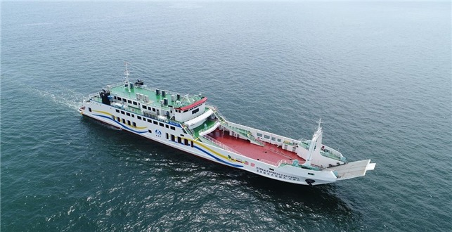
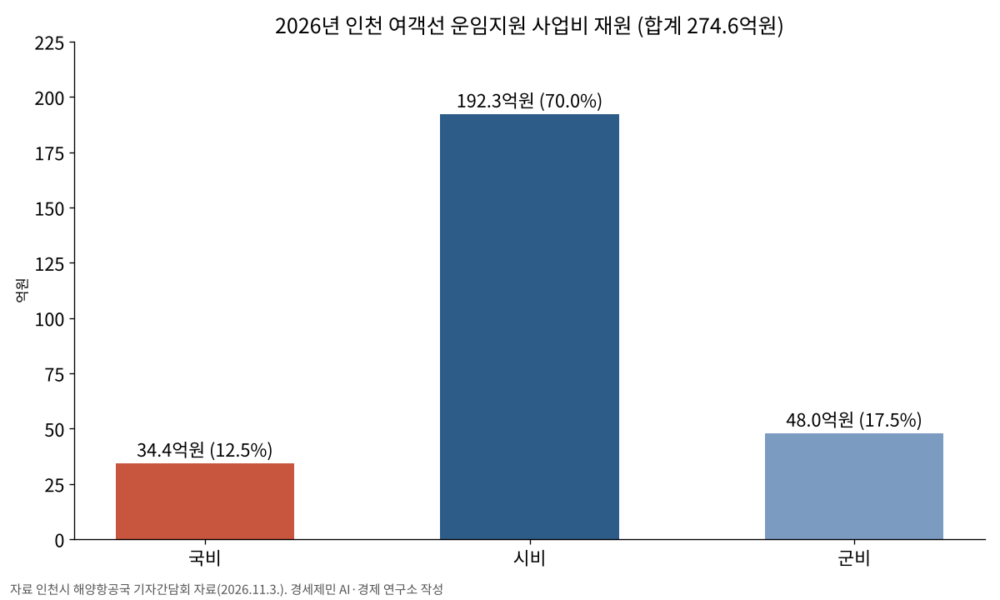

인천시, 여객선 운임지원 2027년 손질…7월 끊긴 타 시·도민 지원은 50% 검토
인천시민 편도 1500원 유지, 터미널이용료·유류할증료는 본인부담 검토
예산 조기 소진에 타 시·도민 지원 7월 25일 중단…부족 재원 약 68억원
올해 사업비 274억6000만원 가운데 국비 12.5%…국비 증액 정부에 건의
AI경제저널=김갑봉 기자 | 인천시(시장 박찬대)는 2027년 시행을 목표로 여객선 운임지원 기준을 합리화하는 방안을 검토하고 있다고 3일 밝혔다. 도서민 운임지원 국비 확대와 집행지침 개정도 정부에 건의한다.
시는 이용객이 늘고 지원 대상이 넓어지면서 시 재정 부담이 커졌고, 섬 주민의 정주 환경 침해 문제도 떠올랐다고 설명했다. 인천연구원 연구 결과와 재정예산개혁TF 권고안, 주민 의견을 함께 검토해 추진계획을 세운다.
시민 1500원 유지, 부대비용은 손질
2027년에도 인천시민은 여객선 정규운임을 지금처럼 편도 1500원에 이용한다. 다만 터미널이용료와 유류할증료 같은 부대비용은 본인부담 기준을 탄력적으로 적용하는 방안을 검토한다.

출향민과 연고자 지원 대상에는 며느리와 사위(직계존비속의 배우자)를 더하는 방안을 추진한다. 이용요금과 부대비용 기준은 다시 정비한다.
타 시·도민 운임 지원율은 정규운임의 50% 수준으로 조정하는 안을 검토하고 있다. 타 시·도민 지원은 지금 끊겨 있다. 시는 지난 7월 21일 예산이 일찍 바닥나 7월 25일부터 타 시·도민 운임 지원을 끝낸다고 밝혔다.
시는 당시 이용객이 계속 늘고 유류할증료가 크게 올라 재정 부담이 커졌다고 설명했다. 타 시·도민 지원분을 빼고도 올해 부족한 재원이 약 68억원에 이를 것으로 내다봤다.
이용객 늘수록 커진 부담
시가 지난해 12월 밝힌 집계를 보면 지난해 1~11월 인천 섬을 오간 연안여객선 이용은 208만6564건으로 1년 전보다 11% 늘었다. 이 가운데 「인천 i 바다패스」 이용은 84만2434건으로 31% 늘었다.
인천시민 이용은 70만9186건으로 28%, 타 시·도민은 13만3248건으로 48% 늘었다. 운임이 비싸 할인 폭이 큰 서해5도 방문객은 19만9917명으로 66% 늘었다.
시는 당시 올해도 같은 기준으로 바다패스를 이어 간다고 밝혔다. 그러나 7월 예산이 바닥났다.
2년 새 네 차례 넓힌 지원
시는 2025년 1월 바다패스를 시행해 인천시민 운임을 시내버스 요금 수준인 편도 1500원으로 낮췄다. 타 시·도민 지원율은 50%에서 70%로 올렸다.
올해 7월에는 출향민 지원을 운임 70%에서 편도 1500원으로 바꾸고, 지원이 없던 연고자에게도 1500원을 적용했다. 9월에는 섬에서 근무하는 다른 시·도민 군인과 군무원, 경찰·소방공무원, 공중보건의까지 1500원으로 넓혔다.
국비는 34억원
해양항공국 기자간담회 자료를 보면 올해 여객선 운임지원 사업비는 274억6000만원이다. 국비 34억3500만원, 시비 192억2900만원, 군비 47억9600만원이다. 대상은 강화 5곳, 옹진 17곳 등 22개 섬이다.
국비 비중은 12.5%이고 시·군비가 87.5%다(연구소 계산). 시는 2027년 1월부터 「도서민 여객선 운임지원 국비 증액」과 「집행지침 개정」을 중앙정부에 계속 건의할 방침이다.
박광근 시 해양항공국장은 "이번 여객선 운임지원 제도 개선은 섬 주민의 이동권과 정주여건을 보호하면서도 사업이 재정적으로 흔들림 없이 지속될 수 있도록 내실을 다지는 조치"라고 말했다.

참고문헌
- "인천시, 여객선 운임지원 사업 지속가능성 높인다. 2027년 지원기준 합리화 검토·국비 확보 추진", 인천시, 2026.11.3., https://www.incheon.go.kr/IC010205/view?repSeq=DOM_0000000015881738
- "해양항공국 기자 간담회 자료(여객선 운임지원 제도 개선)", 인천시 해양항공국, 2026.11.3.
- "인천시, 인천 i 바다패스 타시도민 여객선 운임지원 7월 25일부터 종료", 인천시, 2026.7.21., https://www.incheon.go.kr/IC010205/view?repSeq=DOM_0000000015178277
- "인천시, 섬 방문 여객선 이용객 200만 명 돌파 … 아이(i)-바다패스 효과로'섬 관광 전성시대'열다", 인천시, 2025.12.9., https://www.incheon.go.kr/IC010205/view?repSeq=DOM_0000000013699768
[사진 출처]
- [사진1] 인천광역시, 「인천 섬 주민, 시내버스 요금으로 여객선 탈 수 있다」 보도자료 첨부 「여객선 사진」, 2022.2.21., 공공누리 제1유형(출처표시), https://www.incheon.go.kr/IC010205/view?repSeq=DOM_0000000004176895
관련기사
- 인천 앞바다 쓰레기 9월까지 4299톤 수거…섬 쓰레기 1170톤 뭍으로
- 인천항 크루즈 올해 113항차·내년 132항차…시, 지역축제·상권 연계 관광 강화
- [해양경계] 한중 해양경계 16차 회담, 서해5도 앞에서 멈춘 세 경계선
- [해상풍력 기획①] 인천 해상풍력, 섬 주민 몫은 법에 없다… 세 갈래 공백
저작권자 © AI경제저널 무단전재 및 재배포, AI학습 및 활용 금지